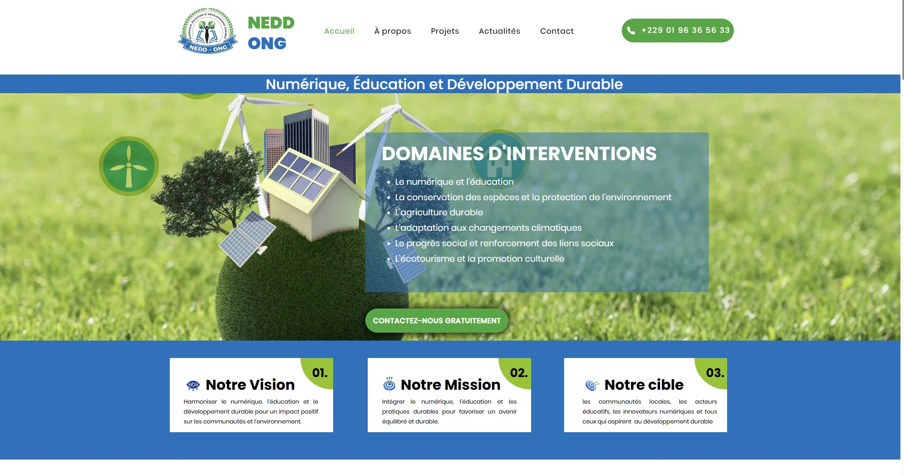
Institutionnel
Association / ONG
NEDD ONG
Mission, impact et domaines d'intervention — une vitrine à la hauteur de l'engagement associatif.
Chaque projet raconte une histoire : une activité à valoriser, des visiteurs à convaincre, des contacts à générer. Voici une sélection de réalisations concrètes — ONG, artisans, PME, boutiques et plateformes sur mesure.
Filtrez par technologie pour découvrir des projets proches de votre besoin.

InstitutionnelMission, impact et domaines d'intervention — une vitrine à la hauteur de l'engagement associatif.
 Site vitrine
Site vitrineCrédibilité B2B et prise de contact simplifiée pour une activité de distribution spécialisée.
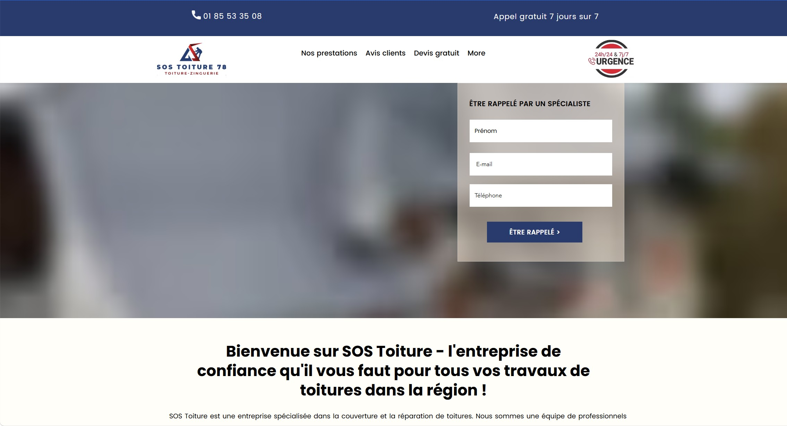
SEO localAcquisition locale, urgence toiture et formulaires optimisés pour convertir depuis mobile.
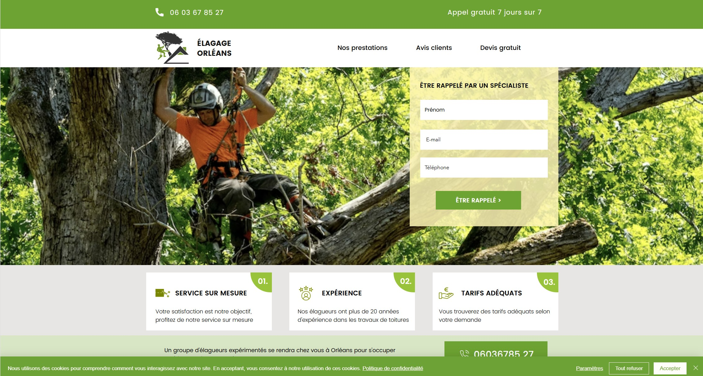
Service localConfiance et proximité pour une activité où le client doit se sentir en sécurité avant d'appeler.
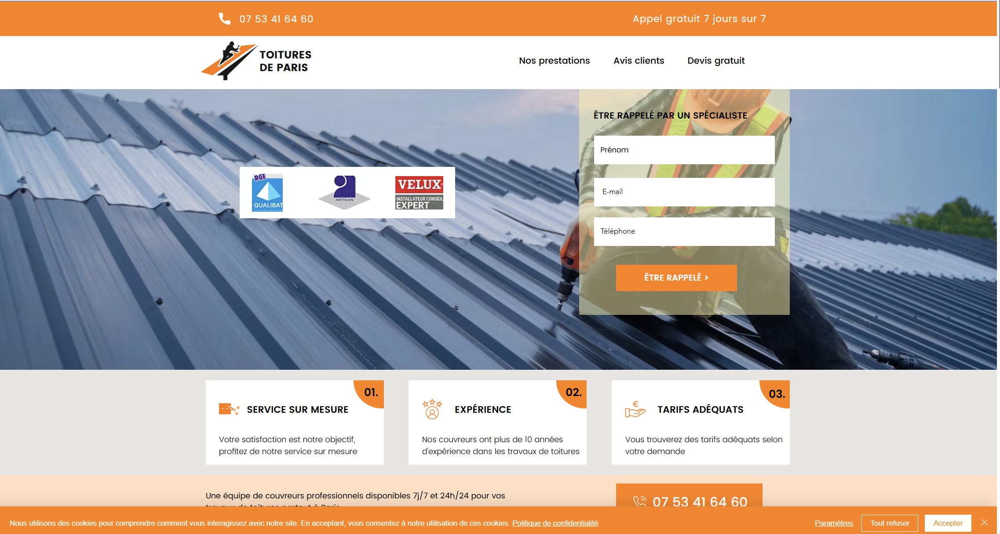
ConversionCouverture, rénovation, réparation — un parcours visiteur pensé pour générer des devis.
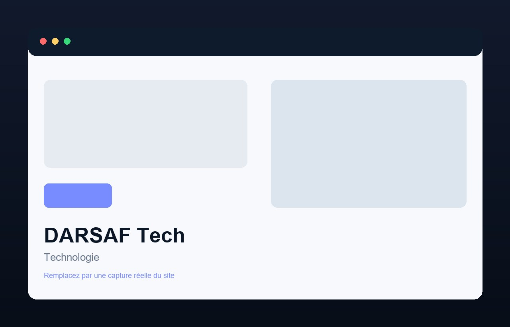
Sur mesureSite léger en code pur : image moderne, performances et contrôle total du rendu.
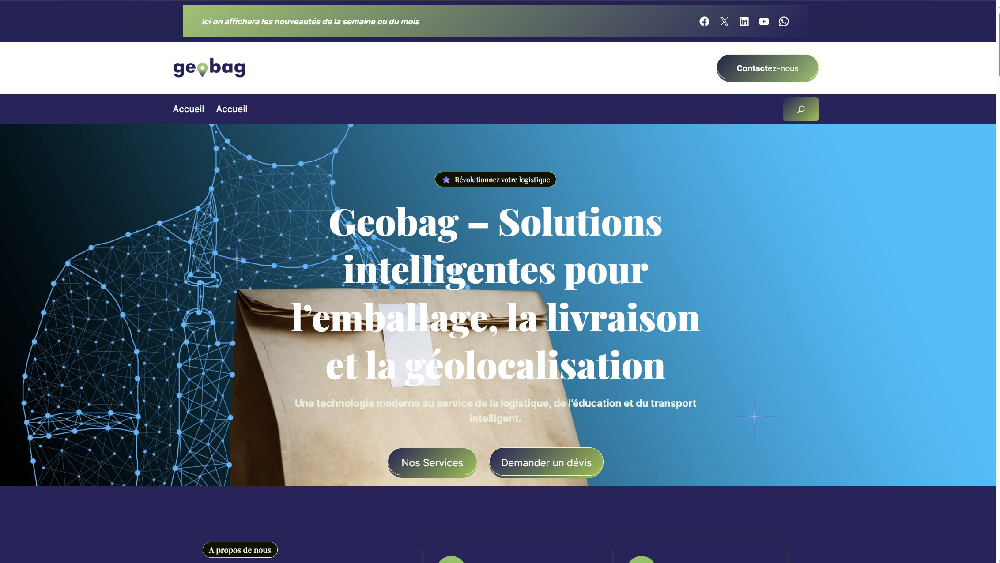
CatalogueExpérience boutique fluide : produits mis en valeur, navigation simple, image de marque soignée.
Expérience Logistique fluide : produits mis en valeur, navigation simple, image de marque soignée.
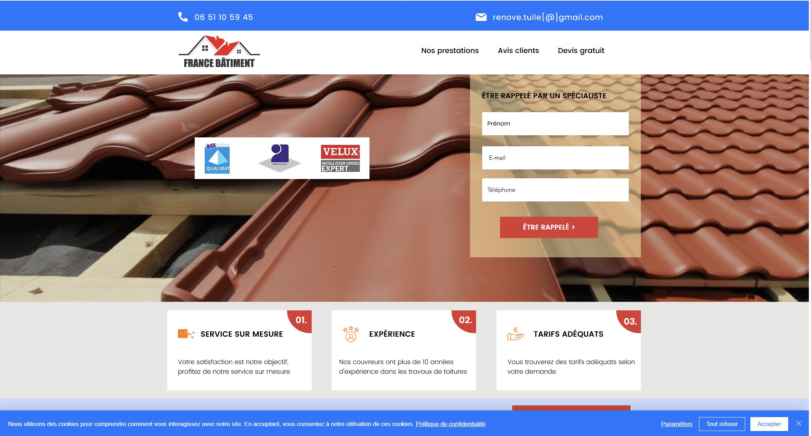
BTPVitrine BTP crédible : prestations structurées, devis en un clic, image professionnelle.
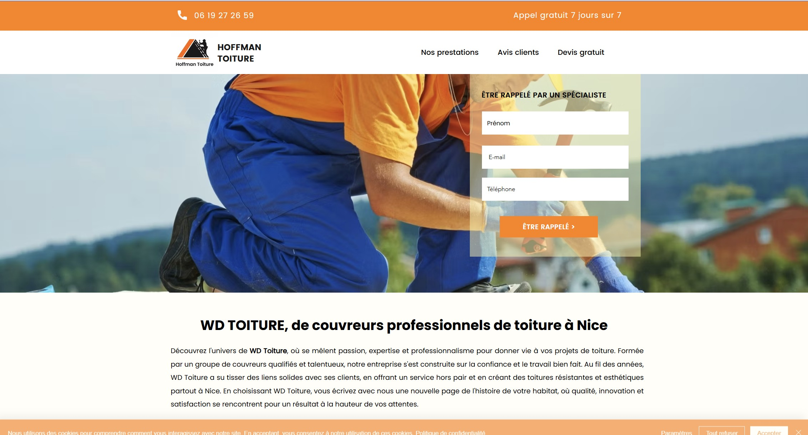
LandingOne-page percutante : message clair, CTA répétés, conversion maximale sur mobile.
 Landing
LandingSite multi-pages percutantes : message clair, CTA répétés, conversion maximale sur mobile.
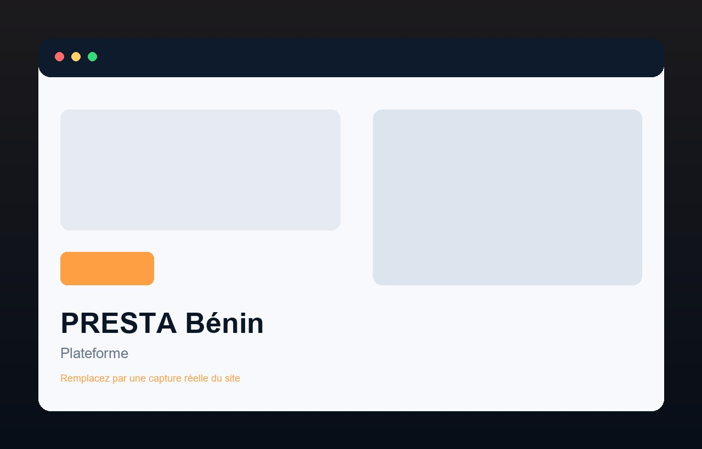
PlateformeMise en relation prestataires / clients : parcours fluide et logique métier sur mesure.
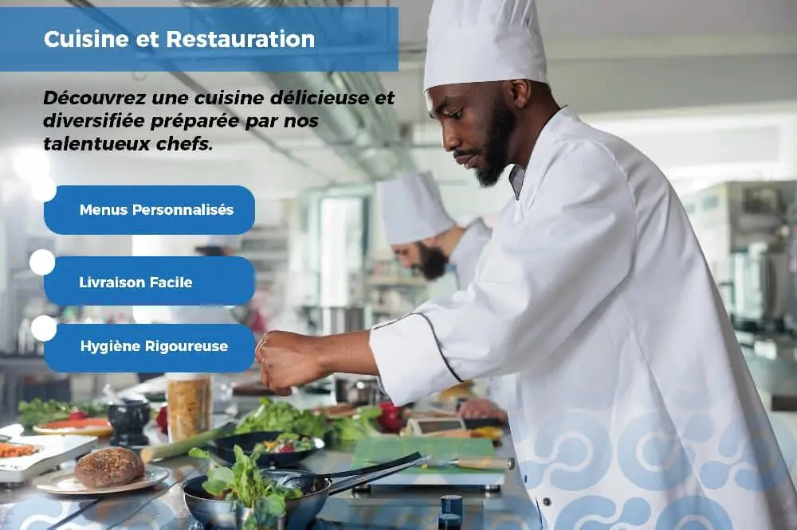
PlateformeMise en relation prestataires / clients (Services urgentes et sensibles) : parcours fluide et logique métier sur mesure.
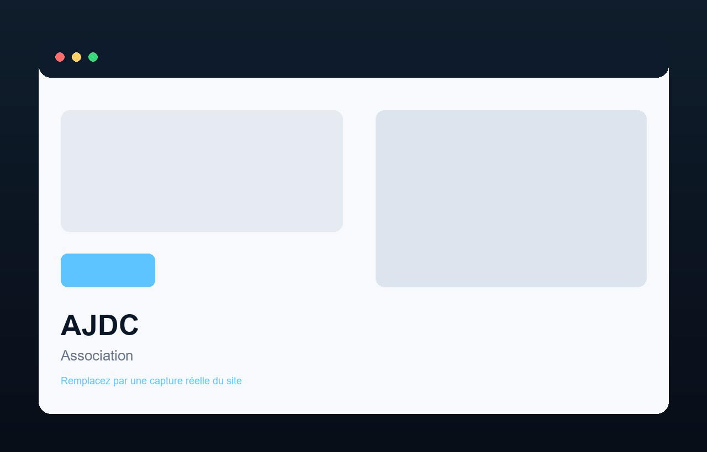
AssociatifProjets, partenaires, impact — une narration web claire pour mobiliser et fédérer.
 Portfolio
PortfolioCarte de visite digitale : compétences, projets et personnalité en un coup d'œil.
Que vous soyez artisan, association ou entrepreneur — je conçois le site qui vous ressemble et qui sert vos objectifs business.